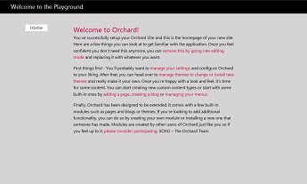

This topic was updated for the Orchard 1.0 release.
An Orchard theme defines an application's appearance and is used to customize the look and feel of an Orchard website. A theme can override the style sheets, images, layouts, or content templates provided by any Orchard module. In addition, a theme can contain code that overrides targeted code in a module.
This article shows how to create a theme from scratch. It is intended to be an introduction to theme development and has been kept simple by design.
Instead of starting from scratch, you can create a theme by customizing an existing theme (a parent theme). Orchard provides a theme named "TheThemeMachine" that is designed as an easy-to-use parent for custom themes. For more information about using a parent theme, see Customizing the Default Theme.
Generating a New Theme
Before you can use the command-line command codegen to generate the code structure for you new theme, you must download and enable the Code Generation feature. This feature is not installed to Orchard by default. For more information, see Command-line code generation.
To generate the code structure for a new theme, open the Orchard command-line utility and enter the following command:
codegen theme MyFirstTheme
The codegen command creates the code structure for a new theme and sets the name of the theme to MyFirstTheme. The command generates the following folder structure:

The only files created are the Theme.txt and Views\Web.config files. The Theme.txt file is the theme manifest and is where the Admin Panel (dashboard) looks for information such as the name of the theme. Web.config is a configuration file that ASP.NET MVC requires for rendering any views that are in the Views folder. You seldom have to make changes in the Web.config file.
Creating Styles for Your Theme
In the Styles folder, create a file named Site.css. (You can name the file anything you want as long as it has a .css extension.)
The following example shows a stylesheet. (It has been kept simple for this example.) For information about the structure of this stylesheet and other CSS recommendations, see UI Guidelines for Theme Authors.
/*
Theme: My First Theme
Author:
Copyright:
*/
/* Colors Palette
Background: #d3d3d3
Text: #000
Main Accent: #999
Links: #c03
*/
/* Reset
***************************************************************/
html, body, div, span, applet, object, iframe,
h1, h2, h3, h4, h5, h6, p, blockquote, pre,
a, abbr, acronym, address, big, cite, code,
del, dfn, em, font, img, ins, kbd, q, s, samp,
small, strike, strong, sub, sup, tt, var,
dl, dt, dd, ol, ul, li,
fieldset, form, label, legend,
table, caption, tbody, tfoot, thead, tr, th, td {
margin: 0;
padding: 0;
border: 0;
outline: 0;
font-weight: inherit;
font-style: inherit;
font-size: 100%;
font-family: inherit;
vertical-align: baseline;
}
header, footer, aside, nav, article { display: block; }
/* Clearing Float
***************************************************************/
group:after {
content: ".";
display: block;
height: 0;
clear: both;
visibility: hidden;
}
.group {display: inline-block;} /* for IE/Mac */
/* General
***************************************************************/
body {
font: normal 100% Segoe UI,Trebuchet,Arial,Sans-Serif;
height: 100%;
text-align:left;
color:#000;
background: #d3d3d3;
}
/* Headings */
h1,h2,h3,h4,h5,h6,legend {font-weight:normal; font-style: normal;}
h1 {font-size: 160%;}
h2 {font-size: 145%;}
h3 {font-size: 130%;}
h4 {font-size: 120%;}
h5 {font-size: 105%;}
p { margin: 0 0 1em; line-height: 1.538em; }
p img.left { float: left; margin: 0.923em 0.923em 0.923em 0; padding: 0; }
p img.right { float: right; margin: 0.923em 0 0.923em 0.923em; }
a:focus,
a:hover { text-decoration: underline; }
a { color: #c03; text-decoration: none; }
#header {
background:#000;
color: #000;
width:100%;
height:50px;
margin-bottom:40px;
}
#branding h1{
font-size: 140%;
color:#fff;
padding:8px 0 0 40px;
}
/* Structure
***************************************************************/
#layout-navigation
{
width: 960px;
margin: 0 auto;
display: block;
border-bottom: 1px solid #dbdbdb;
}
nav ul
{
padding: 0px;
margin: 0px;
}
nav ul li
{
border:1px solid #dbdbdb;
background:#f6f6f6;
display:block;
float:left;
margin:0 2px -1px 0;
}
nav ul li.current
{
border-bottom: 1px solid #fff;
background:#fff;
}
nav ul a
{
padding:0 18px;
display:block;
float:left;
color: #333;
font-size: 1.077em;
text-decoration:none;
line-height:24px;
}
/* Main
***************************************************************/
#main {
margin:0 auto 40px;
width:600px;
}
/* Secondary
***************************************************************/
/* Forms
***************************************************************/
/* Misc
***************************************************************/
Adding a Layout to Your Theme
In the Views folder, add a layout file (Layout.cshtml) and add the following code and markup:
@{
Script.Require("ShapesBase");
Style.Include("site.css");
}
<div id="header">
<div id="branding">
<h1>@T("Welcome to the Playground")</h1>
</div>
</div>
<div id="layout-navigation" class="group">
@Display(Model.Navigation)
</div>
<div id="main">
@Display(Model.Content)
</div>
This file defines the basic structure of the rendered web page. For more information about layout pages, see Template Files and their Locations.
Adding a Theme Image
You can provide a thumbnail image that represents your new theme, which will be displayed in the Admin Panel. The image file must be named Theme.png and it must be placed in the theme's root folder. The following image represents this new theme.

Applying a New Theme
To apply a theme, in the Dashboard, click Themes. Under Available, select the new theme and then click Set Current.

The Manage Themes page is redisplayed showing MyFirstTheme as the current theme.
You can now go to your website to see the new theme in action.